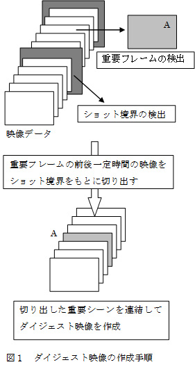

リサーチ
ダイジェスト映像の自動作成に関する研究
視聴者が十分に楽しめるダイジェスト映像を作成することを目的としてサッカー放送を録画した映像の重要な場面を集めてダイジェスト映像化する方法について検討しています。図にダイジェスト映像作成の手法の概要を示します。まず、映像データから重要フレームを検出します。次に重要フレームの前後一定時間をショット境界のところで切り出すことで、重要シーンとします。最後に重要シーンを繋ぎ合わせることでダイジェスト映像といった内容です。

視聴者が十分に楽しめるダイジェスト映像を作成することを目的としてサッカー放送を録画した映像の重要な場面を集めてダイジェスト映像化する方法について検討しています。図にダイジェスト映像作成の手法の概要を示します。まず、映像データから重要フレームを検出します。次に重要フレームの前後一定時間をショット境界のところで切り出すことで、重要シーンとします。最後に重要シーンを繋ぎ合わせることでダイジェスト映像といった内容です。
